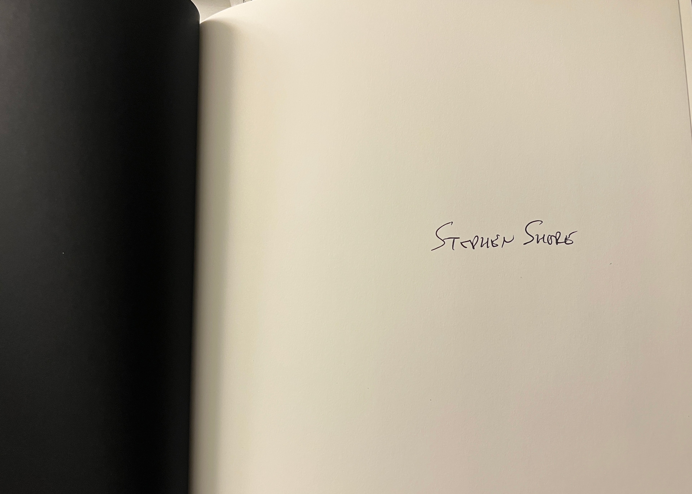

My First Photobook Photographer
Evening with Stephen Shore
By: Eugene Lee
“'Would you come and talk to the students?’ ‘Yeah, sure.’ I said.”
“‘But I have to warn you. I dropped out!’”
“Just drive to do it and see. I don't think they know what they're doing, but there is something speaking to them. The same was happening to me back then."
The siren noises passed by the Broadway street. Silences between the talk open up the space.
